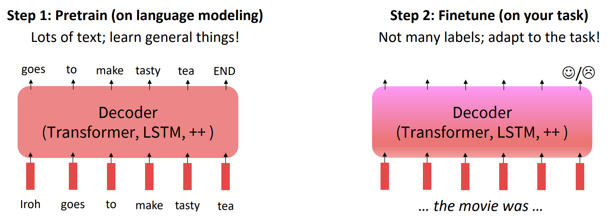
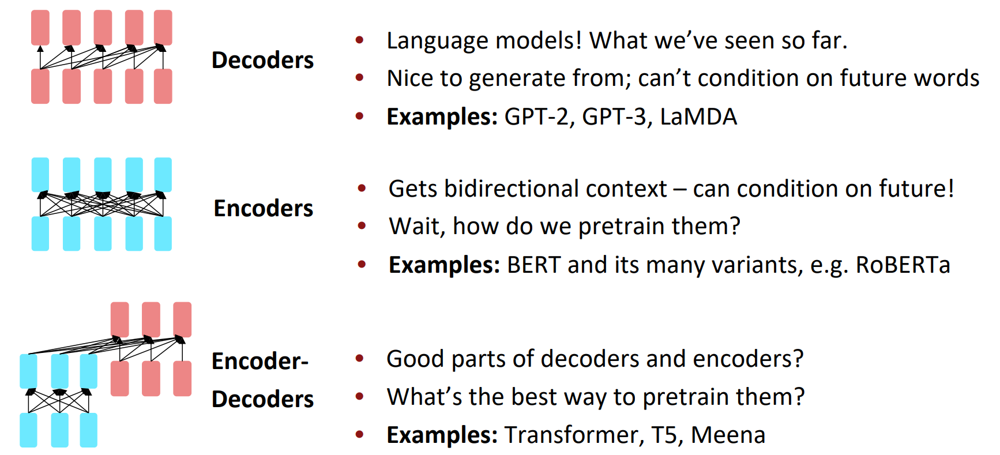
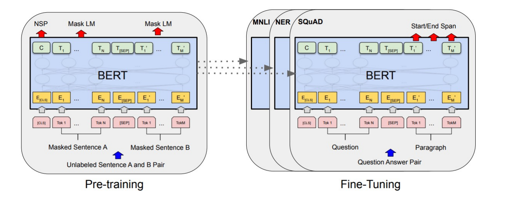

Pretraining
1. The Pretraining / Finetuning Paradigm
Pretraining can improve NLP applicatios by serving as parameter initialization.

2. Model Pretraining Three Ways
The neural architecture influences the type of pretraining, and natural use cases.

Generative Pretrained Transformer (GPT)
2018's GPT was a big success in pretraining a decoder.
- Transfomer decoder with 12 layers.
- 768-dimensional hidden states, 3072-dimensional feed-forward hidden layers.
- Byte-pair encoding with 40,000 merges.
- Trained on BooksCorpus: over 7000 unique books.
BERT: Bidirectional Encoder Representations FROM Transfomers.

Details about BERT
- Two models were released:
- BERT-base: 12 layers, 768-dim hidden states, 12 attention heads,110 million params.
- BERT-large: 24 layers, 1024-dim hidden states, 16 attention heads, 340 million params.
- Trained on:
- BooksCorpus(800 million words)
- English Wikipedia(2,500 million words)
- Pretraining is expensive and impractical on a single GPU
- BERT was pretrained with 64 TPU chips for a total of 4 days.
- Finetuning is practical and common on a single GPU
- "Pretrain once, finetune many times."